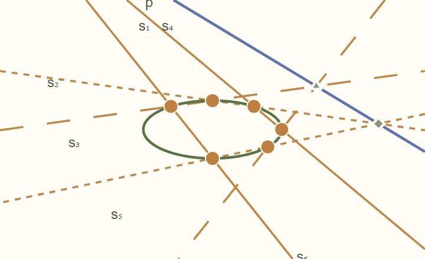

<!doctype html>
<html lang="en"><head><meta charset="utf-8"><meta name="viewport" content="width=device-width, initial-scale=1">
<title>Bezeg graphs: batch B8d, B-splines and projective</title>
<style>
body{margin:0;padding:24px;background:#f5f7ef;color:#2f3a31;font:16px/1.5 Georgia,serif}main{max-width:1500px;margin:0 auto}
h1{font-size:1.8rem;font-weight:500;margin:0 0 8px}h2{font-size:1.3rem;font-weight:600;margin:40px 0 4px}
.pair{display:grid;grid-template-columns:repeat(auto-fit,minmax(340px,1fr));gap:16px;margin-top:12px}
figure{margin:0;background:#fffdf5;border:1px solid #d5dccf;border-radius:6px;padding:10px}
figcaption{font:600 .85rem/1.3 system-ui,sans-serif;text-transform:uppercase;color:#5b6a5c;margin-bottom:6px}
video{width:100%;height:auto;display:block}
<h1>Batch B8d: B-splines and projective (G03, G04)</h1><h2>1. bspline-basis</h2><p>Knot numbers stay: 0 (×3), 1, 2 (×3) name the knot positions; the readout lines go.</p><div class="pair"><figure><figcaption>Before</figcaption><video src="before/bspline-basis.webm" poster="before/bspline-basis.png" autoplay loop muted playsinline></video></figure><figure><figcaption>After</figcaption><video src="after/bspline-basis.webm" poster="after/bspline-basis.png" autoplay loop muted playsinline></video></figure></div>
<h2>2. bspline-deboor</h2><p>No text: the t readout and the de Boor level lists go; the triangle carries the idea.</p><div class="pair"><figure><figcaption>Before</figcaption><video src="before/bspline-deboor.webm" poster="before/bspline-deboor.png" autoplay loop muted playsinline></video></figure><figure><figcaption>After</figcaption><video src="after/bspline-deboor.webm" poster="after/bspline-deboor.png" autoplay loop muted playsinline></video></figure></div>
<h2>3. bspline-insertion</h2><p>No text: nothing is named that the curve and polygon do not show.</p><div class="pair"><figure><figcaption>Before</figcaption><video src="before/bspline-insertion.webm" poster="before/bspline-insertion.png" autoplay loop muted playsinline></video></figure><figure><figcaption>After</figcaption><video src="after/bspline-insertion.webm" poster="after/bspline-insertion.png" autoplay loop muted playsinline></video></figure></div>
<h2>4. bspline-extraction</h2><p>No text: the piece readout goes; the colours mark the Bézier pieces.</p><div class="pair"><figure><figcaption>Before</figcaption><video src="before/bspline-extraction.webm" poster="before/bspline-extraction.png" autoplay loop muted playsinline></video></figure><figure><figcaption>After</figcaption><video src="after/bspline-extraction.webm" poster="after/bspline-extraction.png" autoplay loop muted playsinline></video></figure></div>
<h2>5. bspline-nurbs</h2><p>No text: the radial-error readout goes; the circle, points and dashed overlay carry the idea.</p><div class="pair"><figure><figcaption>Before</figcaption><video src="before/bspline-nurbs.webm" poster="before/bspline-nurbs.png" autoplay loop muted playsinline></video></figure><figure><figcaption>After</figcaption><video src="after/bspline-nurbs.webm" poster="after/bspline-nurbs.png" autoplay loop muted playsinline></video></figure></div>
<h2>6. bspline-blossom</h2><p>No text: the label f(0; 0,5) sat on the dashed polygon, away from the point it names (verdict changed from Keep).</p><div class="pair"><figure><figcaption>Before</figcaption><video src="before/bspline-blossom.webm" poster="before/bspline-blossom.png" autoplay loop muted playsinline></video></figure><figure><figcaption>After</figcaption><video src="after/bspline-blossom.webm" poster="after/bspline-blossom.png" autoplay loop muted playsinline></video></figure></div>
<h2>7. projective-cross-ratio</h2><p>No text: the two cross-ratio lines are not on the poster, so a kept name would name nothing drawn (verdict changed from Keep in part).</p><div class="pair"><figure><figcaption>Before</figcaption><video src="before/projective-cross-ratio.webm" poster="before/projective-cross-ratio.png" autoplay loop muted playsinline></video></figure><figure><figcaption>After</figcaption><video src="after/projective-cross-ratio.webm" poster="after/projective-cross-ratio.png" autoplay loop muted playsinline></video></figure></div>
<h2>8. projective-pascal</h2><p>No text: the scene shows no board text (verdict changed from Keep); poster only, the catalog has no clip for it.</p><div class="pair"><figure><figcaption>Before</figcaption></figure><figure><figcaption>After</figcaption></figure></div>
</main></body></html>
